Welcome to SmartMag!
Thanks for Buying
First of all, thank you for buying this theme. To make your experience pleasant, we've added as much info as needed in this documentation. If you're stuck with anything, please refer to support forums.
- Created By: ThemeSphere
- Support Site: ThemeSphere Forums
- Twitter Updates: @Theme_Sphere
- Version: 2.5.1
Installation
There are two methods to install the theme. If the normal installation method (a) is not supported by your web host, you will have to use the alternate option (b).
a. Normal Installation
- Login to WordPress Admin and browse to Appearance > Themes.
- Click on the Add New Theme (or "Install Themes" tab for older versions) and click Upload.
- Browse your computer to select "smartmag.zip" (it's in the zip file you downloaded from ThemeForest). Click "Install Now" button.
- Once it's uploaded, click the Activate link.
b. FTP Installation (alternate method)
- Use your FTP software to browse to wp-content/themes folder.
- Extract smartmag.zip and upload the smart-mag folder.
- Once it's uploaded, go to your WordPress Admin, browse to Appearance > Themes.
- Click the Activate link.
Important After activation, you will be presented with several plugins that you have to activate. Do not forget to activate them all or not all of the theme features will be available.
Note If you have existing content and featured images, you will have to install Regenerate Thumbnails plugin and run it from Tools > Regen. Thumbnails.
Sample Content Import (optional)
We highly recommend against using this method in production. Please only use on a an extra copy for testing or experimenting. This method
most likely will
Warning Please do not import content on a WordPress installation that already has a lot of content. Or the very least, make a backup first. A catastrophic mess can be created.
New Method (since version 2.1.0)
Using the new method, you can get sample content that's pretty close to the demo site. It will generate random images that are under public domain license (creative commons zero).
- Enable all Bunyad plugins as recommended by the Theme.
- Optional: Install WooCommerce and bbPress if you wish to use them.
- Optional: Delete all your existing widgets from Appearance > Widgets from the "Main Sidebar".
- Go to Theme Settings > Sample Import and click Import Sample Data. You will have to wait a few minutes.
- Install and run the "Regenerate Thumbnails" plugin. (more details) This step will take around 5 minutes.
- That's it.
Tip If it fails, you will have to request your webhost to increase your PHP max_execution_time (or any other webserver timeout to at least 300 secs) and memory_limit (to at least 196M) temporarily. If you tried it on a fresh WordPress install, you can go back to fresh install by using the "WordPress Reset" plugin.
Old Method (not recommended)
This will require performing more steps and it will require extra work to make it look like demo.
- Log into Admin and go to Tools > Import > WordPress.
- Install the WordPress importer.
- Select the smartmag-sample.xml (located in the main zip file in Sample Data folder) and upload it.
- On the next screen, under Assign Authors, select or enter a new username for each author.
- Do NOT check "Download and import file attachments". It will just download placeholder images that you have to change anyways.
- Please be patience as it will take quite some time. Do not interrupt it.
- (optional) Once it's done, go to Appearance > Menus > Manage Locations. Select "Main Menu" next to "Main Navigation".
- (optional) Go to Edit Menus on the same page, select "Main Menu (Main Navigation)" from menus to edit and click Select. Click to expand Features and select Mega Menu for Links under Mega Menu. You may do the same for categories like Entertainment but selecting "Category Mega Menu" instead.
- (optional) Setup your homepage to "Main Homepage" by following the Homepage Setup section.
- All Done.
Changing The Skin
SmartMag comes with two types of skin, Basic and Advanced. Basic skins only affect the color scheme of the default skin. Advanced skins (prefixed with "Advanced:") affect much more and will change Theme Settings. To change the skin:
- Go to Appearance > Theme Settings > Skin & Color.
- Next to Pre-defined Skin, select your desired Skin. Read and click Ok on confirmation popup.
- Save Settings.
Regenerate Thumbnails
If you already had images in your Media Library when you installed SmartMag, or you're switching to/from the "Tech Skin", you will have to resize your image thumbnails. Follow these instructions:
- Go to Appearance > Install Plugins and install Regenerate Thumbnails plugin.
- Next, go to Tools > Regen. Thumbnails.
- Click the Regenerate All Thumbnails button. It will take some time depending on the number of images you have. DO NOT close your browser.
Colors & Typography You can change fonts and colors even after changing the skin. While their shown values may be the default skin values, they can still be changed.
Tech Skin Color If you want the color used in our demo, you can set the color to #2196f3 under General > Theme Color in Skin & Color settings.
Setup Categories
We prefer and recommend categories over tags, but if you wish to use tags, you can enable them from theme settings panel.
Setting up categories for this theme is no different than ordinary category setup in WordPress, however, we provide some additional layout settings.
Go to Posts > Categories and fill in the info required. To choose the correct layout, refer to the Demo.
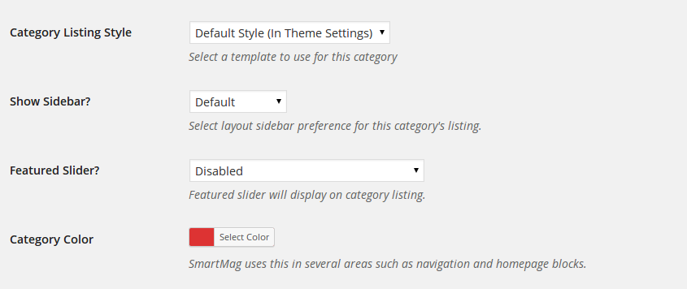
Category Listing Style
There are 3 layout styles and 4 options to choose from: (click to view demo for more information on each style)
- Default Style: This is the style you have chosen to be the default from Theme Settings. If you change the default from Theme Settings, the layout for this category will change too.
- Modern Style - 2 Columns: Shows the listing with a 2 column grid format. Recommended!
- Blog Style: Shows category listing in a typical traditional blog layout.
- Class Large Blog Style: Shows category listing in a typical traditional blog layout.
- Timeline: Timeline is best left for categories where the post date/time and content is most essential.
Show Sidebar?
This option allows you to set whether you would like to show the sidebar in the category listing or not.
Note It does not affect the "single post" view in the category. You can modify whether to show sidebar for a post or not for each post.
Featured Slider?
SmartMag supports featured sliders for categories. There are two options here:
- Show Posts Marked for Featured Slider: This will show posts that have "Featured Slider Post?" checked.
- Show Latest Posts: Show most recent posts in slider, ignoring "Featured Slider Post?" setting.
Category Color — Optional
SmartMag uses the category color to add an underline in the menu for the category. It's also used in homepage blocks for category headings and label colors.
Posts Per Page — Optional
By default posts per page setting from Settings > Reading is used. This option can be used to override that.
Pagination Type
- Default uses the settings from Theme Settings > Listing Layouts > Pagination Type On Archives.
- Normal will set it to typical pagination with page numbers.
- Infinite Scroll will automatically load more posts as user scrolls. No pagination will be shown.
Adding Posts
Adding a new post is the same way as default WordPress installations, however, there are extra options that might need explaining.
Featured Image Size
While the theme can function without featured images, it's highly recommended that you add a featured image to each post. This not only makes your site/blog more lively but also improves user experience.
To set the featured image, use the WordPress normal method.
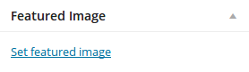
Important If you have existing content and featured images, you will have to install Regenerate Thumbnails plugin and run it from Tools > Regen. Thumbnails. Skipping this will make your existing images look out of proportions or stretched.
Recommended Image Size
Image size (dimensions) will depend on what type of layout you're using throughout your WordPress installation or per individual post basis. This image will not only be used on the post, but also on the category listing pages.
- Compatible with all layouts and default slider: 1078x516 minimum (width x height).
- If you don't use Full Width layout: 702x336 minimum.
- For posts that will only appears in homepage blocks and listings (no slider, no full-width): 351x185 minimum.
Note SmartMag uses WordPress's standard cropping and resizing method.
About Retina We recommended using images of double height and width to have even your content images appear sharp on high-res devices like iPad. Read more below.
About Retina Images
Retina images are used for hi-definition / hight DPI screens such as iPad, Macbook Retina and so on. For these devices, you need to upload images twice the recommended dimensions above.
SmartMag, when activated, informs you to install a few plugins and one of them is WP Retina 2x. Assuming you had existing images that are large enough, you can convert them to retina images from Media > Retina, after activating the plugin.
Supported Post Formats
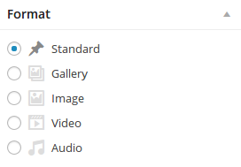
Video Format
Setup your post normally and set a featured image. Copy the embed code of the video from YouTube, Vimeo or any other site that gives you video embed codes. Paste the code in the "Featured Video Code" box.
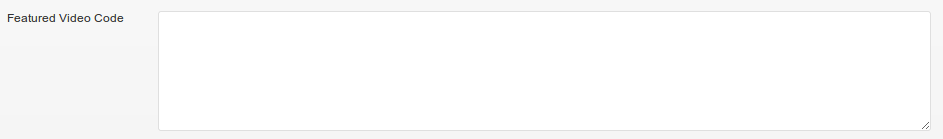
Note Videos will be resized to fit the container so you can choose a larger embed format if the video site allows you to specify size/dimensions.
Gallery Format
SmartMag will automatically convert the first gallery inserted into a post to a gallery slider - granted "gallery" post format is checked. To use the gallery post format, same as every other post, set a featured image first.
- Click Add Media button.
- Click Create Gallery. Upload images or select from Media Library. Click Create a new gallery.
- Click "Insert gallery".
- (optional) If you wish to show thumbnails or create a static/non-slider gallery, set image captions and click Insert Gallery. Change post format to Standard.
Note To create a tiled mosaic gallery, Slim Jetpacks plugin is required.
Audio Format
WordPress supports embedding into posts by default. An audio player will be inserted into the post.
- Click Add Media button.
- Select your audio file. Once uploaded, make sure embed option is selected.
- Insert and Publish.
Image Format
Image format works very similar to a standard post. Just set a featured image of a recommend size and you're done.
Post Settings & Options
You will see the following post options when adding a post.
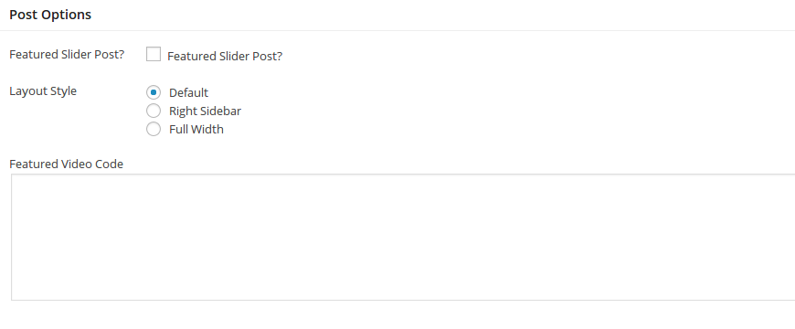
- Featured Slider Post? - Check this to feature this post in the homepage/category sliders.
- Layout Style: You have the option of a layout with a sidebar on right or a full-width layout for this post.
- Featured Video Code: As shown in the Video Format above, it's for setting a featured video for the post.
- Custom Background Image: Available when your layout is set to Boxed in Theme Settings. This allows you to change the background image of your site for only this post.
Reviews System
The review system is pretty self-explanatory. You only have to enable it for posts that are supposed to contain to be a review.
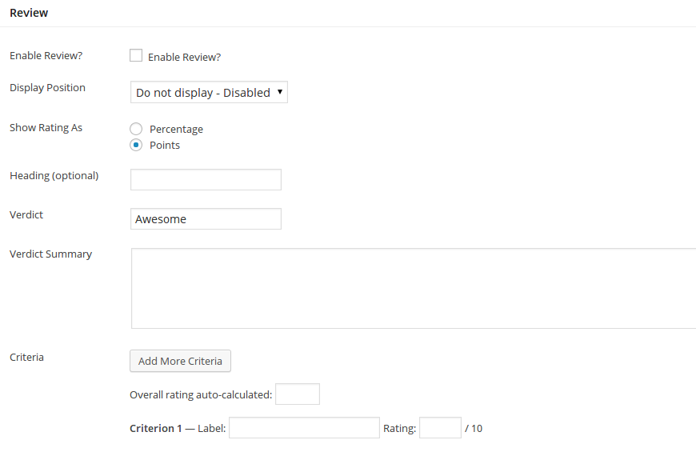
- Enable Review? - Check this to enable review box for this post.
- Display Position: You can either display the review box at top being full width, or at bottom full width.
- Rating Type: You can use either percent or percentage format to display rating in the box.
- Heading: A heading text can be set for the review box. If no heading text is provided, the review box header is hidden.
- Verdict: Enter one word for verdict, such as "Awesome".
- Verdict Summary: Enter a few line summary of the review. You can use advanced shortcodes here too.
- Criteria: Click on Add More Criteria and fill in the Label and Rating for each Criterion that follows.
Multi-page Content Slideshow
One of the unique features in v2.3+ is a multi-page content slideshow. It's basically <!--nextpage--> feature of WordPress with enhanced functionality.
If you are new to WordPress nextpage feature, the only thing to know is that you can place a <!--nextpage--> in Text editor anywhere to split to content into multiple pages - More info here.
Once you have created a multi-page post normally, you will have to enable the slideshow feature. Follow the steps below:
- Edit your post and look for Post Options.
- Next to Multi-page Content Slideshow? select either "AJAX - No Refresh" or "Multi-page" option (explanation below).
- Save your post. That's all. Your slidehow will be split based on
<!--nextpage-->.
Note It's recommended to check "Disable Featured?" for posts of this type.
AJAX or Multi-Page?
There are two options available. AJAX option prevents a page refresh so the content will be loaded via AJAX. This may be good or bad depending on your personal usage.
A site looking for more advertising views will want to use the Multi-page option to register more views. Whereas, a dynamic website wishing to make things faster for users will want to use the AJAX option.
Shortcodes
Most of the shortcodes you will need are added to the GUI Shortcode Generator. Click the "Shortcodes" button while adding a post to see a list of generator-based shortcodes. There are a few layout related shortcodes that will not be listed there.
For more info, refer to the Shortcodes section of the docs.
Creating Pages
Creating pages is a simple process. However, the available templates and special layout based shortcodes might need a bit of explanation.
The Page Builder
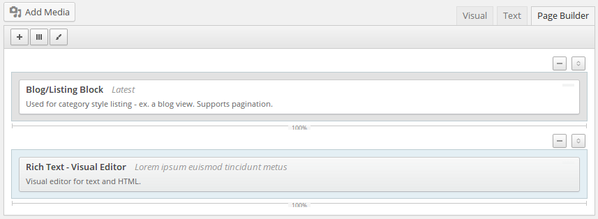
Using the page builder is recommended to create homepages. But you can use it to setup any page you like using the combination of widgets available. What's more, you can even use shortcodes within the text widget within the page builder. The only limit is your creativity!
To use the page builder:
- Considering you're at new page screen (Pages > Add New), click Page Builder next to Visual and Text tab, above the post editor.
- Click the + button to add new widgets. There are two types of widgets, the normal widgets and special block widgets. You can drag and drop multiple normal widgets into a row or column but the same cannot be done for block widgets.
- Click on three lines button next to + button to add a row. You can create multi-column or single column row.
- Under Page Attributes, select Homepage & Blocks as Template.
- Play around with the widgets. Don't forget to enter a page title. Preview and Publish.
About Shortcodes — Advanced & Optional
You can either use the pagebuilder or use advanced shortcodes for everything. Not only that, you may also use shortcodes within the pagebuilder widgets such as Text or Rich Text widget.
For more info, refer to the Shortcodes section of the docs.
Page Templates
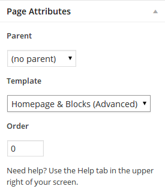
- Default: The default page has a container.
- Homepage & Blocks: This is a bare-bone template. Use it with page builder or when using advanced shortcodes to create the homepage.
- Authors List: Use this template to create a list of blog authors.
- Sitemap: This is a special template only to be used to create a Sitemap page as shown in the demo.
Setting The Slider
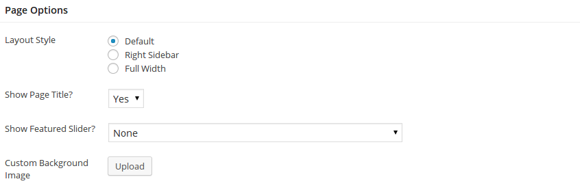
When creating or editing a page (for example, your Homepage), under the editor in Page Options, next to Show Featured Slider?, select the type of slider you wish to use.
Both the options are self-explanatory, the first uses posts you manually marked as "Featured Slider Post?" (read Add Posts to Slider), whereas the second option shows the most recent posts automatically.
Custom Sidebars
Details in Sidebars & Widgets section.
Other Pages, Instructions and Samples
Contact Page
Setting up a contact page requires that you install the "Contact Form 7" (go to Appearance > Install Plugins if you have not already installed it).
First create a contact form:
- Go to Contact and edit the default contact form (Contact Form 1).
Replace form content with this:
<p>[text* your-name placeholder "Your Name"] </p> <p>[email* your-email placeholder "Your Email"] </p> <p>[text your-subject placeholder "Subject"]</p> <p>[textarea your-message placeholder "Your Message"] </p> <p>[submit class:submit-button "Send Message"]</p>
- Edit the "Mail" settings to suit your needs and Save
- For more information, refer to Contact Form 7's FAQ and Docs.
Once you have created your form:
- Go to Contact again. Copy the code under Shortcode column.
- Go to Pages > Add New. Add your page content and paste the shortcode where you would like your contact form to appear.
Adding Google Maps to Contact Page
To add Google Maps:
- Go to Google Maps.
- Find the desired location and in the left pane, click Link icon (it's to the right side of "My places" button, next to print icon).
- Click customize and preview embedded map. Set settings as desired and the copy the HTML code.
- Edit your page and go to Text editor (next to Visual). Paste your code and Publish.
Authors List
To create a page with the list of authors, simply create a normal page and use Authors List as Page Template.
Homepage Setup
There are many different widgets/blocks that can be used to construct your homepage (or any page). To create a page, please refer to Creating Pages section of the docs.
Setting Up Homepage
Once you have created a page that you would like to use as your homepage, follow these steps:
- Go to Settings > Reading.
- Choose "A static page" option for Front page displays.
- Next to Front Page, select the page you created to be used as the homepage.
- Save Changes.
Pagebuilder Blocks For Homepage
While you can use all the page builder blocks widgets for homepage, there are few blocks that are very suitable for homepage. We have used a combination of these in our demo.
Highlight Block — 2 or 3 Columns
There are two highlight styles that you can use on the home-page. The first one, which shows two categories side-by-side, is shown below.
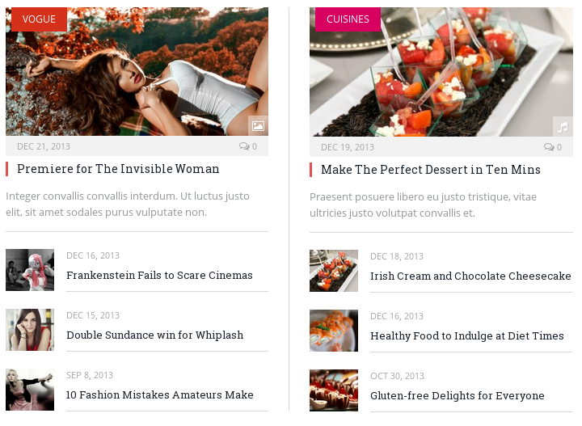
The second style, is of three columns. As shown below:
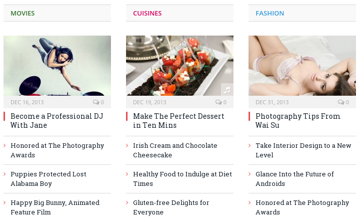
To setup, enter page builder mode. If you haven't already read the section on Page Builder, read it before you proceed.
- Click "+" button to add a pagebuilder widget.
- Click on "Highlights Block".
- Select "2 Columns" and select a category or enter a tag for each column. Posts will be displayed from the selected category or the entered tag.
- Click "Done" and Save/Update your page.
Note You can either choose to use a category OR a tag - but not both at the same time.
News Focus Block
News focus block displays a category and all its sub-categories, as you can see in the picture below. It's a great compact format to display a lot of content.
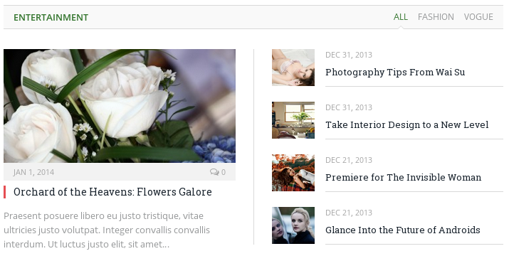
To setup, enter page builder mode.
- Click "+" button to add a pagebuilder widget.
- Click on "News Focus Block".
- Select the parent category. By default all sub-categories under this category will be displayed in tabs. You can choose your own sub-categories by ticking them manually. Alternatively, you can enter tags.
- Click "Done" and Save/Update your page.
Note You can either choose to use sub-categories or sub-tags, but not both at the same time.
Blog/Listing Block — 3 Listing Styles
This is the default listing module you should have already seen on your setup or in the demo. It's the traditional blog listing format as defined earlier for categories.
- Click "+" button to add a pagebuilder widget.
- Click on "Blog/Listing Block".
- There are several types of listings as can explained under Category Listing Style. Rest of the preferences are self-explanatory.
- Click "Done" and Save/Update your page.
Example Homepages Setup
Below we will mention the pagebuilder blocks used in the example homepages in the demo. Please make sure you already know how to create a page and a homepage.
1. Default Homepage
Page Template: Homepage & Blocks (Advanced), Layout Style: Right Sidebar, Show Page Title: No.
- Highlights Block
- 4 Posts, 2 Columns, and categories selected for each column.
- News Focus Block
- 4 Posts and a category selected.
- News Focus Block
- 4 Posts and a category selected.
- Separator
- Line.
- Highlights Block
- 4 Posts, 3 Columns, and categories selected for each column.
- Latest Gallery
- Title "Recent Videos", 10 Media, "Videos" as Type of Media, and "Not Limited" to any category.
Header Setup
Custom Logo
By default, your site title will be used as a text-based logo. However, you can also use an image-based logo.
Multi-colored Text-based Logo
- Go to Appearance > Theme Settings.
- Under Logo Text, if you want the "Mag" part of SmartMag to use the theme's main color, input as follows:
Smart[main-color text="Mag"/] - Save Changes.
Using an Image-based Logo
To be retina friendly (look high quality on devices like iPad), you will have to create two images of your logo. One the normal size and the second exactly double the height and width.
- Go to Appearances > Theme Settings.
- Under Logo Image, click Upload button.
- Upload your second logo (2x size) under Logo Image Retina (2x).
- Click Save Settings.
Top Bar
Top bar is the area above the header. It's enabled by default and has a News Ticker showing latest posts to the left, a widget area and a search box to the right. The widget area is useful for adding social icons.
Disabling Top Bar
- Go to Appearance > Theme Settings.
- Under Disable Top Bar, click the button.
- Save Changes.
Adding Social Icons
You will use the social shortcode in a widget to add your social icons.
- Go to Appearance > Widgets. Click on Top Bar (Above Header) to expand the box.
- Drag and drop a Text widget from left into the box that was expanded in the step above.
Do not enter a title. Modify and enter this shortcode:
[social] [social_icon link="/?feed=rss2" title="RSS" type="rss" /] [social_icon link="http://facebook.com/username" title="Facebook" type="facebook" /] [social_icon link="http://twitter.com/username" title="Twitter" type="twitter" /] [social_icon link="link to your google+ profile" title="Google+" type="google-plus" /] [social_icon link="link to your linkedin profile" title="LinkedIn" type="linkedin" /] [/social]
- Save.
Check Social Icons Shortcode section for more icons.
Adding Advertisement
SmartMag has an ad spot at the right side of the header. To use it, simply create an advertisement widget in the Header Right widget area.
- Go to Appearance > Widgets. Click on Header Right to expand the box.
- Drag and drop an Advertisement widget from left into the box that was expanded in the step above.
- Paste your advertisement code and Save.
Sidebars and Widgets
SmartMag comes equipped with several custom widgets but also styles many of the default widgets in several locations.
If you are unable to see these custom widgets, please activate the Bunyad Widgets plugin.
Custom Widgets
- Bunyad - About
- A widget to display an image/logo and a description of your site/blog. Recommended for footer.
- Bunyad - Flickr
- Display a configurable number of flickr photos from your account with configurable sorting options. Recommended for footer.
- Bunyad - Recent Posts
- An improvement over the default recent posts widget, including thumbnail. Suitable for main sidebar and footer.
- Bunyad - Recent Tabs
- Display latest posts. First tab is Recent and other tabs can be any category. Recommend for main sidebar.
- Bunyad - Latest Reviews
- Display the latest reviews.
-
- Bunyad - Popular Posts
- Displays the overall popular posts, based on number of comments received, with thumbnails.
-
- Bunyad - Post Listing Blocks
- Allows you to use suitable post listing blocks from page-builder, but in the sidebar as a widget.
- Bunyad - Tabber Advanced
- Like Recent Tabs but allows you to select a sidebar to use widgets from. Thus allowing you to use any type of widget in tabs.
How to use widgets
- Go to Appearance > Widgets.
- Main Sidebar is the main right sidebar and Footer (3 widgets columns) is the large footer. Expand the box at right, where you would like to place your widget, by clicking on the arrow icon next to it.
- Drag & drop the widget you wish to use, in the expanded area below the box (Main Sidebar for example).
- Fill in the information necessary and click Save.
About Tabber Advanced Widget
This widget relies on Custom Sidebars provided by the plugin. To use it:
- Create a custom sidebar. You can use any name but use a descriptive name to remember it like Tabber Widgets.
- Drag/drop widgets to newly created custom sidebar/widget area normally. Note that the widget title will be used as the tab title - so keep it short.
- Drag/drop the Bunyad - Tabber Advanced widget in your Main Sidebar area.
- Select the newly created custom sidebar from the drop down next to sidebar.
- Save.
The Right Sidebar
SmartMag's right sidebar uses the Main Sidebar widget area. Any widgets you drag/drop in this widget area will be displayed in the right sidebar.
Demo uses Recent Tabs, a Text widget with latest-gallery shortcode, an Advertisement widget, and the Latest Reviews widget.
Latest Gallery
The latest gallery in the demo shows 5 recent posts in a slider. For the latest gallery widget in the right sidebar, we use the following shortcode in a Text widget:
[latest_gallery cat="all" number="5" type="slider"]
For more information on this shortcode's settings, refer to the Shortcodes section.
Advertisement Setup
Setting up advertisements on the right side is pretty simple. You will create a Advertisement widget and paste your ad code in it.
For a normal ad, create the Advertisement widget as explained in section above, and paste the code in it. That's all.
If you would like to use custom ads in two columns, you can use the columns shortcode, for example:
[columns] [column size="1/2"]left ad code here[/column] [column size="1/2" class="right"]right ad code here[/column] [/columns]
Sticky Sidebar
Sidebars are increasingly being used for prominent content but as the user scrolls, the sidebar goes out of the view. The solution is Sticky Sidebar.
Sticky sidebar makes your sidebar widgets always visible as the user scrolls, until they reach the footer. To activate:
- Go to Appearance > Theme Settings.
- In General Settings, look for Sticky Sidebar and set it to Yes.
- Save Settings.
Single Sticky Widget
What if you don't want your whole sidebar, but only the last widget to be always visible/sticky? The solution is a great lightweight plugin named Q2W3 Fixed Widget.
Once you have installed it, you have to configure it to work properly with SmartMag:
- Go to Appearance > Fixed Widget Options. Next to Screen Max Width, enter 1024.
- For Margin Bottom, enter 460 - this is your footer height. You may have to increase or decrease it based on your footer height.
- Save Changes.
Next, to make a widget sticky:
- Go to Appearance > Widgets. Click to expand your sidebar (for instance "Main Sidebar").
- Add your desired widget at lowest position. While adding, check the Fixed Widget checkbox.
- Save.
WARNING This only works for the last widget in a sidebar.
Custom Sidebars
SmartMag relies on Custom Sidebars plugin to offer this functionality. This means your sidebars will be safe even if you decide to switch the theme. It's recommended by the Theme to be installed but if you haven't installed it yet, install it from Appearance > Install Plugins (not visible if plugin already installed).
Go to Appearance > Widgets and Create a new sidebar.
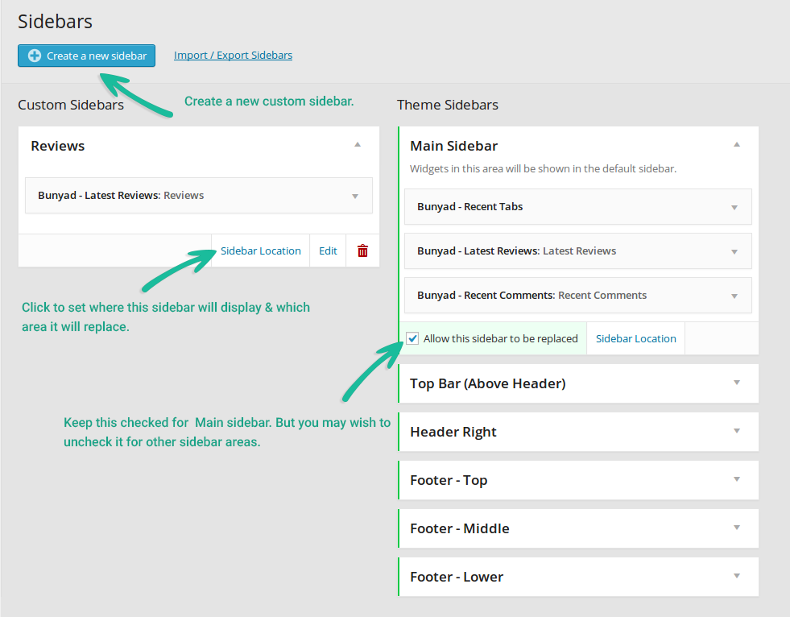
Next, simply add/edit a post or page and you should have a Sidebars box at the right side where you can select your sidebar from a drop-down list. Generally, you only want to replace Main Sidebar.
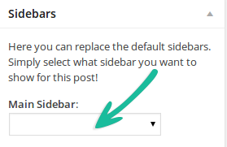
Using on categories, tags archives, search, and other archives
- Go to Appearance > Widgets. Click arrow to expand the sidebar you wish to use on a category.
- Click Sidebar Location link. You should see this: 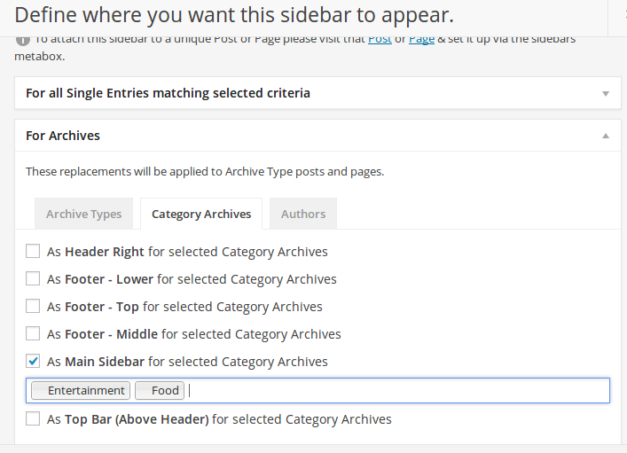
- Click to expand For Archives.
- For categories, click on Category Archive tab.
- For other archives like custom taxonomies, search, tag archives etc. click on Archive Types.
- Check "As Main Sidebar for selected"... and click on the input box to select your categories or archives types.
- Save Changes.
Color, Style & Typography
Both the color/style and typography settings are located in Theme Settings.
Color & Style
Using a Pre-defined Skin
- Go to Appearance > Theme Settings. Click Style & Colors tab at left.
- Select one of the pre-defined skins and click Save Settings.
Customizing the Colors & Backgrounds
- Go to Appearance > Theme Settings. Click Style & Colors tab at left.
- Usually you may wish to only change Main Color. This will effect links, background of special elements like slider and highlights module, and other relevant areas. Leave everything default and see if you like the result.
- If the Main Color changes are not enough, customize and change colors as you please.
- Save Settings.
Note In case you mess up, you can always click Reset Colors. DO NOT click Reset All Settings as that will erase all other settings too.
Typography
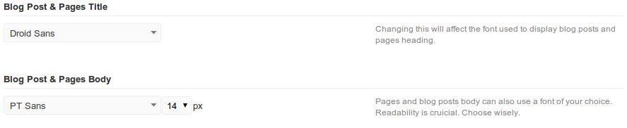
For typography, we use Google Web Fonts. Many of the typography elements have suggested font families or fonts.
- Go to Appearance > Theme Settings. Click Typography tab at left.
- Select a font you like as the Main Font, Heading Font etc. and Save Settings.
- Experiment to get the best effect.
Other Recommended Fonts
- Droid Sans
- Lato
- PT Sans
- Roboto
- Gudea
- Merriweather Sans
- Oxygen
About Character Sets — Advanced
Non-latin script based languages will not display correctly when using the default fonts. This is because, to limit size, only latin charset is included by default.
To get the fonts to display correctly, you will have to tick the character sets for your language. Some latin-based languages required Latin Extended.
Note If all else fails, you can use the System Fonts show towards the end of the drop down choices.
Custom Fonts
When you need to upload your own webfonts that you have bought, follow the steps below:
- First of all you need your font in .woff format. If you don't have a .woff file, you can convert your font to woff using the FontSquirrel Web Font Generator. The generated zip file from there will contain the .woff file.
- You have to upload this .woff file to a valid location with a URL. You can do that via FTP or from WordPress Admina at Media > Add New.
- Go to Theme Settings > Typography and under Custom Fonts, enter the File URL (to the woff file uploaded in step 2), and a font name.
- One you Save Settings and go back to Theme Settings > Typography, you should be able to see your font name in the list of available fonts.
Adobe TypeKit Fonts
Adobe TypeKit fonts are professioanl-grade premium fonts available on limited free or paid packages. To add a Typekit font to SmartMag:
- Login to your Typekit and hover over Kit and click Create new Kit. Enter a kit name and your site domain, and click Continue.
- On the next screen, copy the embed code and paste it to your Apperance > Theme Settings > Head Code. Click Continue.
- Next, you will be prompted to Browse all fonts. Choose any font and click the + Use fonts button.
On the use this font popup, click Web, and select your kit.
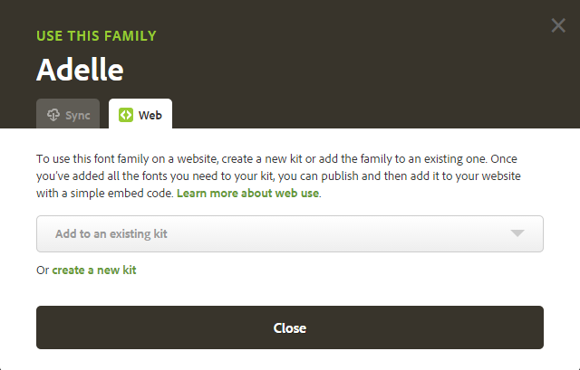
Navigate to Appearance > Typography > Adobe Typekit Fonts and add your new font to "Font Name". If you are unsure what's your font name, click on "Using Font In CSS" in your Typekit Editor.
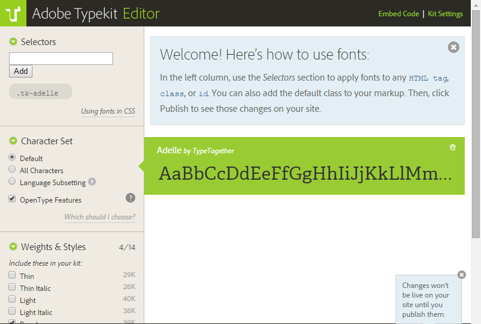
A new popup will appear like below with your font-name. In this case, the correct name is adelle here (notice, no double quotes).
- One you Save Settings and go back to Theme Settings > Typography, you should be able to see your font name in the list of available fonts.
Slider & Other Settings
To access these settings in question, go to Appearance > Theme Settings. Each setting includes relevant information on the right side about what it does making everything very self-explanatory.
Add Posts to Default Slider
The default featured content area in SmartMag consists of 8 posts. 5 of these posts are displayed in the slider, while 3 of them are displayed right next to the slider in a post grid. The posts are sorted by date.
The default option of slider is to display images you have marked as "Featured Slider Post?" manually. However, there's an option to automatically show the most latest posts in the slider (when using that option, the setting below does not apply). Read Setting the Slider section for more information.
To mark a post to be displayed in the featured area:
- Go to Posts > Add New or Edit an existing post.
- Under Post Options, check "Featured Slider Post?". This is covered in more details under Post Options section.
- Save your post. That's all.
Slider Settings
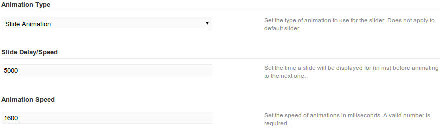
Slider Settings in the panel are only related to the effects used by all the featured sliders. To change the featured slider for a homepage/page, refer to the Setting A Slider sub-section.
Featured Area Post Grid - Custom Category or Tag — the 3 posts on right side of slider
This is an OPTIONAL choice some of our users like. You can use a category or tag to show latest posts from, for the post grid on the right side of slider.
- Go to Appearance > Theme Settings > Slider & Featured.
- Under Right Side Posts Grid, select a category or enter a tag - but not both.
- Save Settings.
Revolution Slider — OPTIONAL - for static sliders
Revolution slider is a Premium 3rd party slider plugin used, mainly, for creating static sliders. These are the sliders where you can control each slide, images, animations, text layers and so on. To learn more, please refer to the Revolution Slider Documentation.
Sample RevSlider
SmartMag package zip file contains a smartmag-rev-slider.zip under Sample Data folder. If you would like to import it, please follow the instructions here.
Other Settings
FavIcon and Mobile Icon
These favicons are good to have when someone bookmarks your site. Both of these settings are located in General Settings near the bottom.
Use a 32x32 .ico file for your favicon and 144x144 .png file for mobile icon. Mobile icon will be used when users add your website as a shortcut on mobile devices like iPhone, iPad, Android etc.
Post Tags
While we prefer categories over tags, some of our users might want to use both at the same time. To enable tags, go to Page / Post Settings and set Show Tags to Yes.
Custom CSS
Please do not edit .css files directly. When there is a theme upgrade, you will lose any custom edits you made. Rather, we recommend that you use the built-in custom CSS setting to extend the default style. This CSS will be preserved between upgrades.
Go to Custom CSS, enter your desired CSS and click Save Settings.
Settings Backup & Restore
Before you make any massive like in colors, you may wish to create a backup. Just click Download Backup to get a backup. You can later restore it using the Restore/Import feature.
WooCommerce & Setup
SmartMag can be used with WooCommerce 2.1+ to setup an eCommerce Shop with fully compatibility offered since version 2.0.
Note This section assumes you already have WooCommerce Plugin activated. If you do not yet know how to use WooCommerce, please use WooCommerce's Documentation to familiarize yourself.
Sample Content
SmartMag uses the WooCommerce's default sample content. Follow the official WooCommerce Dummy Data guide.
Please note, on demo, for the Shop Sidebar example, we're using a custom sidebar with two widgets: WooCommerce Price Filter, and WooCommerce Top Rated Products.
The Default Shop Pages
SmartMag fully uses WooCommerce's internal pages. When WooCommerce is activated, it will create Shop, Cart, Checkout and My Account pages. These are normal WordPress pages that you can edit just like any other page.
Setting Up Sidebars
By default, the WooCommerce integration will have full-width layout. If you wish to enable the "Right Sidebar":
- Go to Appearance > Theme Settings > WooCommerce.
- Select Right Sidebar setting under "WooCommerce Default Sidebar".
- Save Settings.
Setting a Custom Sidebar for your Shop
To replace the right sidebar with a custom sidebar for your Shop, follow the steps below.
- If this is your first custom sidebar, perform the steps mentioned under Custom Sidebars.
- Go to Appearance > Widgets.
- Assuming you have created your custom sidebar, click on it its name to expand. Click on Sidebar Location.
- In the popup, click For Archives.
- Click "As Main Sidebar for selected Archive Types". This will set it as the sidebar for the main shop page and shop categories.
- To set it for single product pages only, click to expand "For all Single Entries matching selected crtiera". Check "As Main Sidebar for selected Post Types". Click on the input box and select Products.
- Click Save Changes.
Disabling Sidebar for Selective WooCommerce Pages
Sometimes you may wish to disable the sidebar for only some pages, such as the "Checkout" page. You can disable the sidebar selectively for pages.
- Go to Pages > All Pages. Locate and edit one of the WooCommerce shop page such as Shop, Cart, Checkout or My Account.
- Edit the page normally and under Page Options box, next to Layout Style, select Full Width.
- Save your page.
Tip The page named "Shop" is used for all product listings so you may change its sidebar settings to affect all product listing pages/archives.
bbPress & Setup
SmartMag can be used with bbPress with fully compatibility offered since version 1.5.
Note This section assumes you already have bbPress Forum Plugin activated.
Adding Categories & Forums
SmartMag's default bbPress layout is based on traditional forum hierarchy. You need to create categories and forums.
Create categories:
- Go to Forums > New Forum.
- Enter the required info and on the right side, under Forum Attributes, select Category next to "Type".
- Publish.
Create forums:
- Go to Forums > New Forum.
- Enter the required info and on the right side, under Forum Attributes, next to Parent, select the category you created in the instructions above.
- Publish.
Adding Login/Register Button to Navigation
- Go to Appearance > Menus and edit your main navigation menu.
- On the right side, click on Links, enter URL as #user-login (or a link to your login page but it must include #user-login at the end). In Link Text, enter:
<i class="fa fa-user"></i> - Save your menu.
Login Widget for Sidebar
Please make sure to sure (bbPress) Bunyad Login Widget for the sidebar. There's another widget with a similar name. Make sure the one you use has the name Bunyad in it.
Translation & Internationalization
SmartMag comes with .po/.pot file included under the smart-mag/languages folder. The front-end strings are in smart-mag.pot file. While the back-end strings are in bunyad-admin.pot. To translate front-end:
- Download and install Poedit.
- Open smart-mag.pot in Poedit. Translate as needed.
- Save the file with the ISO language code locale. You can check this list (look under "WP Locale") to find the locale. If your locale is
en_GBIn this case, you would save your file asen_GB.po - Step above should have generated a .po and an .mo file. Copy both these files under the wp-content/themes/smart-mag/languagesfolder.
- Go to Settings > General and select your language next to Site Language.
- Save a backup of these files somewhere safe. If you upgrade the theme from WordPress admin, the language files will have to be re-uploaded.
If you wish to translate the backend too, you will have to follow the same steps as above but the filename will be prefixed with bunyad-admin-. Example: bunyad-admin-en_GB.po
RTL Version
For languages that read from right-to-left unlike English which is left-to-right, SmartMag will automatically switch to an RTL style, as long as you it's in your language and uses the correct locale (as explained above).
Multilingual Sites
For multilingual sites, the best way is to purchase the WPML Plugin. SmartMag is compatible with the plugin.
When using WPML, we recommend you use Display the language switcher in the WP Menu option and select Main Menu. This will display the languages drop down menu in the main navigation menu.
Advanced Customizations
If you are looking for layout customizations beyond the Style & Typography settings built into the theme, it's important to judge the nature of customization.
If it's a simple layout change, it's very likely achievable by using different Shortcodes or Custom CSS. However, for something not possible using either of these, a child theme is recommended.
Child Theme
WPBeginner has a great article on How to create a
WordPress Child Theme. Use Template: smart-mag instead of twentyeleven.
Also, use @import url("../smart-mag/style.css"); in the CSS file to import parent stylesheet.
Shortcodes
SmartMag supports the usage of shortcodes in Pages, Posts, Page Builder Text/Rich Text widgets, Advertisement, About, and Text widgets. Thereby, giving your maximum flexibility. Please note when creating a post or a page , most of these shortcodes are accessible via the Shortcodes button in the Visual editor.
Posts Shortcodes
Post shortcodes are accessible via the GUI Shortcode Generator. Simply click the Shortcodes drop-down in the editor (make sure you're on Visual editor) and select the relevant shortcode to be guided.
If you wish to manually use the shortcodes (advanced users only), the guide below offers some insight into each.
PullQuote
[pullquote]quote here[/pullquote]
Dropcap
[dropcap]A[/dropcap]
To use the square version:
[dropcap style="square"]A[/dropcap]
Buttons
[button link="http://somewhere.com" color="white, blue, black, green, red, yellow, or custom hex code" text_color="optional hex color" size="small, medium, or large"]Label[/button]
Tabs
[tabs] [tab title="Title 1"]Content 1[/tab] [tab title="Title 2"]Content 2[/tab] [/tabs]
Accordions
[accordions] [accordion title="Title 1" load="show"]Content 1[/accordion] [accordion title="Title 2" load="hide"]Content 2[/accordion] [/accordions]
Tip load="show" defines to show this accordion (expanded) by default.
Toggles
[toggle title="Title 1" load="show"]Content 1[/toggle] [toggle title="Title 2" load="hide"]Content 2[/toggle]
Tip load="show" defines to show this accordion (expanded) by default.
Custom List
[list style="arrow, check, edit, folder, file, or heart"] [li]Item 1[/li] [li]Item 2[/li] [/list]
Custom lists support all of the icons from FontAwesome. Simply type it in style argument without the fa- (ex. arrows for fa-arrows).
Columns
Columns are a border-line layout shortcodes. While they're also often used in posts, they're covered below.
Layout & Block Shortcodes — Advanced!
This section is only for advanced users. Use page builder if you are uncomfortable with using shortcodes.
Column Shortcodes
The column shortcode is a special shortcode. Sample shortcode:
[columns] [column size="1/4"]Column 1 goes here[/column] [column size="1/4"]Column 2 goes here[/column] [column size="2/4"]Column 3 goes here[/column] [/columns]
The [column] shortcode has the following variables/options:
- size
- 5 columns are supported. Hence all combinations are supported up to 5 such as 1/2, 2/3, 1/4, 3/5 etc. Alternatively, English version of the numbers
is also supported, such as half, one-third, three-fourth, four-fifth etc. Example:
size="one-fourth". - text_align
- left, center, and right are valid alignment values. left is used by default. Example:
text_align="right". - class
- Any of the custom CSS classes can be defined for the column using this attribute.
Blog Block
Blog block is used to list latest posts using the desired listing format. Sample:
[blog type="alt" heading="Latest Posts" heading_type="block" /]
- type
- (optional) value: modern, modern-3, grid-overlay, grid-overlay-3, alt, timeline, or leave empty. This setting defines the listing format. The listing styles were explained in Category Listing Styles. Default: Listing Format in Theme Settings.
- posts
- Number of posts to display. Set to 0 or -1 for no limit.
- heading
- (optional) Enter a heading you wish to use for this block, for instance a category title.
- heading_type
- (optional) value: block, or leave empty. The default heading is in a post heading format. To get it to the home page section heading style, use block as value.
- cats
- (optional) A comma separated list of category ids you wish to limit the posts to a category or multiple categories.
- tags
- (optional) A comma separated list tag slugs you wish to limit the posts to a tag or multiple tags. This only works if cats is not used.
- pagination
- value: 1 (to enable), or 0 (to disable). If pagination is enabled, the "posts" number is used for limiting posts per page.
- pagination_type
- (optional) value: infinite. When value is set to infinite, more posts are loaded as the user scrolls.
- sort_by
- value: modified, random (leave empty for published date).
- sort_order
- value: asc, desc (leave empty to use desc).
- taxonomy
- (optional advanced) A custom taxonomy even registered with custom post types. Usually used with the categorization taxonomy of custom post types.
- post_type
- (optional advanced) Define the post type to use. Defauls to post. Multiples can be defined separated with comma such as: post,my_cpt
Latest Gallery Block
The gallery block is used to either display a carousel or a slider of latest posts of a specific media such as galleries, videos etc. Sample:
[latest_gallery cat="all" number="5" type="slider" /]
- format
- (optional) value: all, gallery, video, audio, or leave empty. This defines the post format to use. For example, setting this value to video will use the featured images of the most recent posts in video post format.
- number
- Number of posts to display.
- title
- (optional) Enter a heading you wish to use for this block, for instance a category title.
- cat
- (optional) A category id to limit the posts to a specific category.
- tax_tag
- (optional) A tag slug (e.g. cooking) to limit the posts to a specific tag. Only works if a cat is not specified.
- type
- value: carousel, slider. You can either display using a carousel (recommended for normal body) or a slider (recommended for sidebar).
- post_type
- (optional advanced) Define the post type to use. Defauls to post. Multiples can be defined separated with comma such as: post,my_cpt
Note Gallery block uses the featured image of the selected post formats. It will not display videos or audio but simply the featured image of that post.
Highlights Block
The highlights block was explained in Page Blocks section. Sample:
[highlights columns="2" cats="entertainment,business" /]
- columns
- value: 2, 3. Number of columns.
- cats
- Comma separated categories to use in the columns. Either use category slug or category id.
- tags
- (optional) Comma separated tag slugs to use in the columns. Only works if cats is not used.
- headings
- (optional) Comma separated headings to use for each column in respective order.
- sort_by
- value: modified, random (leave empty for published date).
- sort_order
- value: asc, desc (leave empty to use desc).
- post_type
- (optional advanced) Define the post type to use. Defauls to post. Multiples can be defined separated with comma such as: post,my_cpt
Highlights block is the only block that can go in a single column, as a separate block. For example (using columns shortcode):
[columns] [column size="half"][highlights cat="entertainment" /][/column] [column size="half"][highlights cat="vogue" /][/column] [/columns]
When in this mode, the supported parameters are also different. There's advanced taxonomies support here too.
- cat
- Comma separated categories to use in the columns. Either use category slug or category id (when using custom taxonomies, slug is NOT supported).
- tax_tag
- (optional) Comma separated tag slugs to use in the columns. Only works if cats is not used.
- title
- (optional) Heading to use for this block.
- sort_by
- value: modified, random (leave empty for published date).
- sort_order
- value: asc, desc (leave empty to use desc).
- posts
- Number of posts to show.
- taxonomy
- (optional advanced) The registered slug of a custom taxonomy. Usually used with the categorization taxonomy of custom post types. cat must be an id when using a custom taxonomy.
- post_type
- (optional advanced) Define the post type to use. Defauls to post. Multiples can be defined separated with comma such as: post,my_cpt
News Focus Block
The news focus block was explained in Page Blocks section. Sample:
[news_focus cat="business" /]
- cat
- Category slug or id. The parent category to use. Sub-categories from this parent will be displayed in the heading.
- tax_tag
- Tag slug to limit posts to a tag. Only use if cat is not defined.
- sub_cats
- Comma separated list of category ids to use as sub-categories.
- sub_tags
- Comma separated list of tag slugs to use as sub-categories in the heading. Only use if sub_cats is not defined.
- sort_by
- value: modified, random (leave empty for published date).
- sort_order
- value: asc, desc (leave empty to use desc).
- posts
- Number of posts to show.
- taxonomy
- (optional advanced) The registered slug of a custom taxonomy. Usually used with the categorization taxonomy of custom post types. cat must be an id when using a custom taxonomy.
- post_type
- (optional advanced) Define the post type to use. Defauls to post. Multiples can be defined separated with comma such as: post,my_cpt
Separator
[separator type="space" /]
- type
- value: space, line, half-space, half-line. The separator can be either be a large empty space, line-based, small empty space, or line-based but with lesser space.
Social Icons
The social icons shortcode is mainly used for header top bar or footer widgets. These are the small icons you can see in top bar on demo. Example:
[social] [social_icon link="/?feed=rss2" title="RSS" type="rss" /] [social_icon link="http://facebook.com/username" title="Facebook" type="facebook" /] [social_icon link="http://twitter.com/username" title="Twitter" type="twitter" /] [social_icon link="link to your google+ profile" title="Google+" type="google-plus" /] [social_icon link="link to your linkedin profile" title="LinkedIn" type="linkedin" /] [/social]
- link
- Link to your social profile.
- title
- Mouse-over title to use for this social icon.
- type
- value: facebook, twitter, google-plus, linkedin, twitter, rss, pinterest, instagram, youtube, tumblr.
Media Shortcodes
WordPress core supports embedding much of media out of the box.
Galleries
Galleries were already covered in Gallery Post Format section. For advanced usage, refer to Gallery Shortcode section in WordPress docs.
Embedding Videos & Audio
To show a video from YouTube or Vimeo for example, you would just copy the link and paste it into your post content.
Checkout the Embeds section of WordPress's docs to find the supported sites.
Should that fail, you can use the embed shortcode as [embed]http://www.youtube.com/watch?v=dQw4w9WgXcQ[/embed].
Self-hosted Audio & Video
Starting WordPress 3.6, you can self-host audio or video easily. However, not many webhosts will allow you to upload files of large size.
- While adding a post, click Add Media. Go to Insert Media > Upload Files.
- Select and upload your audio or video file.
- Make sure Embed Media Player is selected in "Embed or Link" option.
- Click Insert into post.
For advanced usage, check out the Audio and Video sections of the WordPress docs.
Copyright & Credits
Demo Images Authors creative commons, not included
- Demo Images (Not Included): (flickr CC-BY-2.0) Yasser Alghofily, Daniel Zedda, Jonathan Kos-Read, Alejandro Pinto, Jim H., Luis Hernandez, William Cho, Lucas Zallio, Mark Sebastian, Lies Thru a Lens.